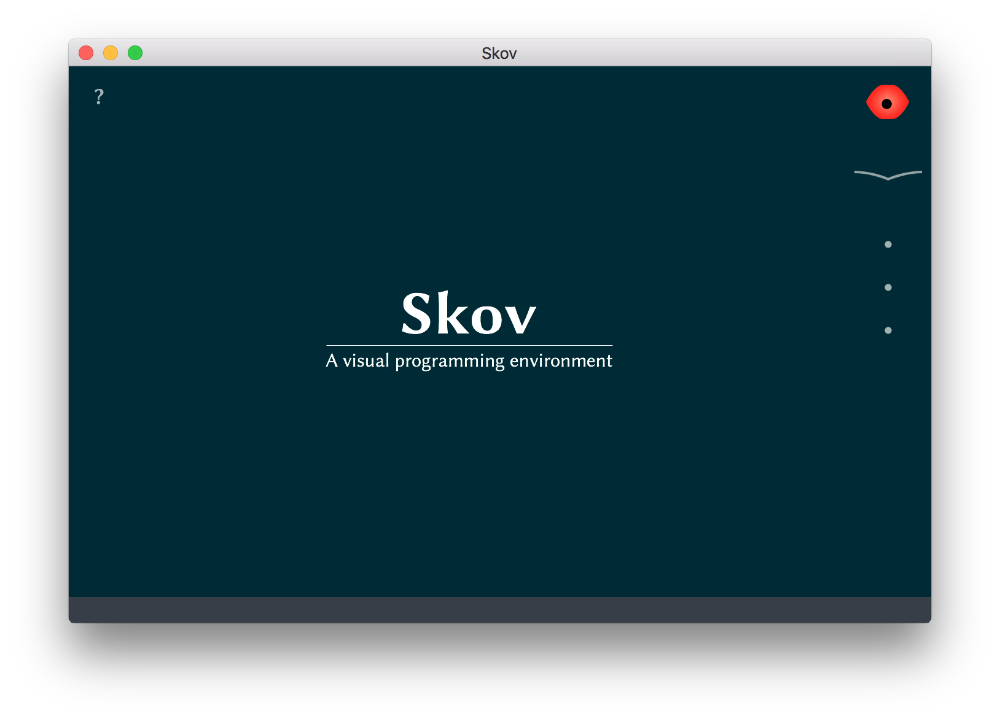
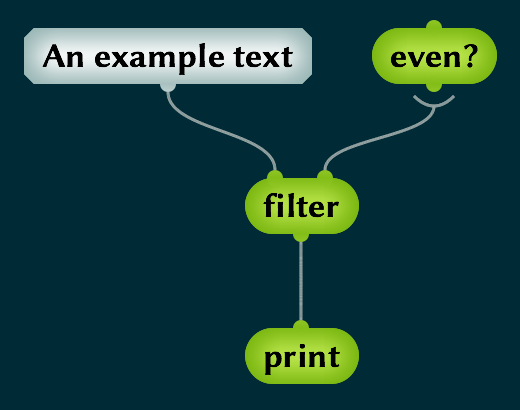
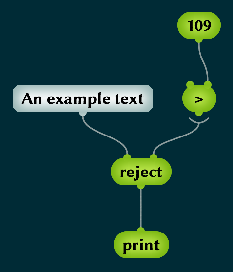
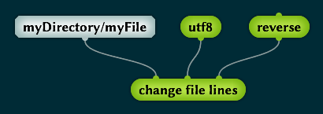
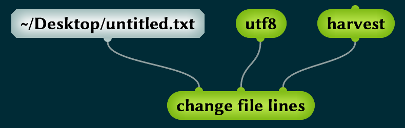
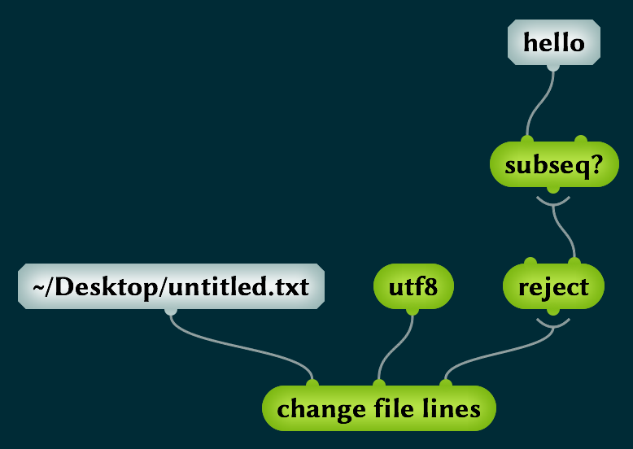
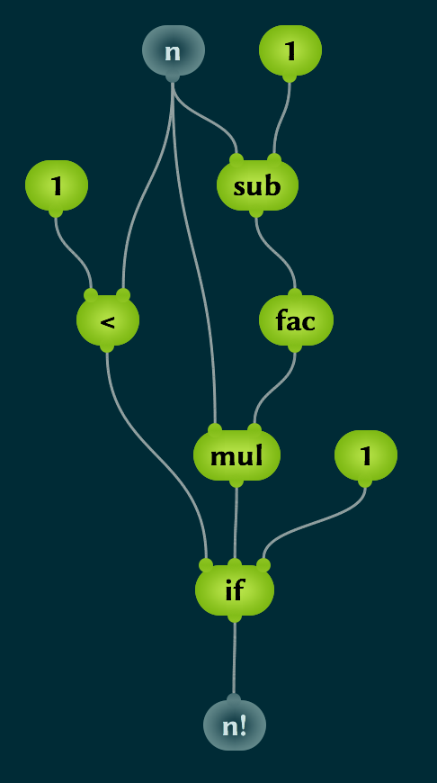
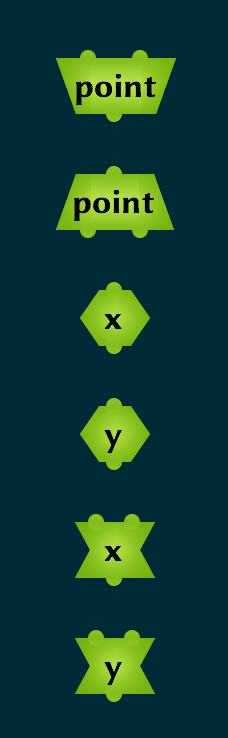
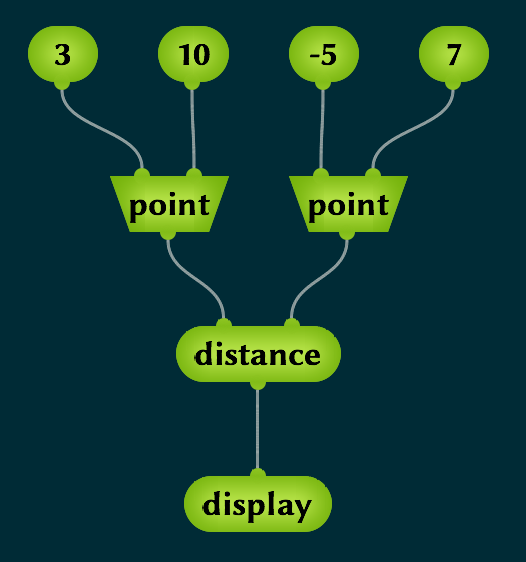

Skov est un environnement de programmation visuel basé sur Factor.
Téléchargez la version de Skov adaptée à votre plateforme :
Il n'y a pas de processus d'installation. Il suffit d'extraire le dossier Skov depuis l'archive zip ou dmg et lancer le programme.
Avertissement : Il y a actuellement un problème avec la version Mac. Pour pouvoir lancer Skov, you devrez d'abord ouvrir un Terminal, aller dans le dossier Skov et taper :
xattr -rc Skov.app
Vous devrez peut-être aussi désactiver Gatekeeper.
Vous verrez cette fenêtre.
Le truc à droite sert à naviguer dans l'environnement Skov. Chaque point cache en fait un bouton plus. Cliquez sur celui du bas ou appuyez sur
Vous pouvez maintenant entrer le nom de votre mot. Tapez
La croix rouge indique qu'il y a un problème avec ce mot, il ne peut pas être exécuté. C'est normal, il n'y a rien dedans ! L'un des points à gauche cache un bouton plus qui vous permet d'ajouter à mot à la définition de votre mot
Les deux bulles ne demandent qu'à être connectées en elles.
La flèche à côté du mot
Maintenant, appuyez sur
Appuyez sur
Cliquez sur le bouton de résultat et vous devriez voir le nombre 3.
Pourquoi avons-nous utilisé
Appuyez sur
Pour entrer du code Skov, vous n'êtes pas obligé d'insérer d'abord toutes les bulles et de les connecter après. Vous pouvez le faire en une seule étape. Si vous placez votre curseur sur un connecteur et que vous appuyez sur
C'est le premier mot que vous définissez qui a des entrées et des sorties, ce qui veut dire que vous pouvez l'utiliser pour traiter des données. Les mots que vous avez définis avant affichaient juste quelque chose à l'écran. Celui-là n'affiche rien, mais vous pouvez l'utiliser dans un autre mot. Allons-y.
Définissez un nouveau mot appelé
Cliquez sur le bouton de résultat et vous devriez voir "((voks))" parce que le texte d'entrée
Retournez voir
L'exemple suivant va introduire un concept extrêmement important.
Disons que nous avons du texte et que nous ne voulons garder que les lettres qui sont représentées par des nombres pairs (chaque lettre est en fait représentée par un nombre en interne). On fait ça comme ça :
Remarquez que la connexion entre
Vous pouvez imaginer que l'entrée non connectée de
Nous voulons maintenant retirer chaque lettre qui est après "m" dans l'alphabet. Puisque chaque lettre est représentée par un nombre, nous pouvons faire (si nous savons que "m" a le numéro 109) :
On peut maintenant utiliser ce principe pour traiter des fichiers texte.
On veut inverser l'ordre des lignes de texte dans un fichier. La dernière ligne deviendra la première et la première deviendra la dernière. C'est facile:
(Évidemment, utilisez le chemin d'un vrai fichier sur votre ordinateur.)
Si votre éditeur de texte est assez intelligend pour recharger les fichiers automatiquement, vous verrez que chaque fois que vous cliquez sur le bouton de résultat, le fichier est inversé.
On peut aussi facilement retirer toutes les lignes vides d'un fichier
Comment fait-on pour enlever toutes les lignes d'un fichier qui contiennent "hello" ?
Celui-là est pas mal ! On a vu que
Ce principe est vraiment très puissant.
Quand vous voulez retirer toutes les lignes vides d'un fichier, si vous savez qu'il y a déjà un mot qui s'appelle
Maintenant un peu de maths...
Voici les fonctions sinus et cosinus hyperboliques.
Allez sur Wikipedia pour voir ces fonctions écrites en notation mathématique traditionnelle et comparez-les au code Skov. Est-ce que vous êtes d'accord que ce code est une plus belle représentation de ces fonctions que la notation mathématique?
Et l'inévitable fonction factorielle...
Celle-ci est intéressante pour deux raisons.
La première est le mot
La deuxième raison est le mot
Il est maintenant temps de parler d'objets. Un objet est un conteneur pour plusieurs données. Par exemple, un objet peut contenir deux nombres, ou un nombre et une séquence, ou trois autres objets. Un objet appartient à une certaine classe. Vous pouvez créer une classe d'objets en cliquant sur le deuxième point à droite ou en appuyant sur
En cliquant sur le seul point à droite ou en appuyant sur
On peut maintenant créer deux objets point qu'on pourrait utiliser pour représenter des coordonnées sur un écran. Quand vous définissez une classe, les mots suivants sont définis pour vous :
Le premier est un constructeur, il prend deux nombres et retourne un objet point. Le deuxième est un destructeur, il prend un objet point et retourne la valeur de chaque emplacement. On a ensuite deux accesseurs pour les emplacements
On veut calculer la distance entre deux points. Définissez un nouveau mot appelé
Vous verrez qu'il y a quatre points à gauche qui vous permettent d'insérer un constructeur, un destructeur, un accesseur ou un mutateur. Ou vous pouvez les insérer en appuyant sur
Regardez ce code attentivement. Vous reconnaissez le théorème de Pythogore que vous avez appris à l'école ? Est-ce que vous êtes d'accord qu'il a une meilleure tête comme ça ?
Pour tester notre mot
Skov vous dit qu'il y a deux mots qui s'appellent
Sélectionner le deuxième
Vous pouvez maintenant tester ce code :
Remarquez qu'on utilise deux constructeurs pour créer deux objets point qu'on passe à
Nous avons à présent rencontré les trois types de noeuds qu'on peut créer dans la partie droite de la fenêtre :
Les vocabulaires peuvent être crées en cliquant sur le premier point à gauche ou en appuyant sur
Si vous connaissez d'autres langages de programmation, je voudrais prendre le temps de souligner quelques différences avec Skov.
I have just explained that words, classes and vocabularies do three different things: describing computation, describing data and organizing code. In other languages the distinction is not so easy. In object-oriented languages like Smalltalk and Java, the class is a concept used to describe data and organize code. You have to define your "words" (called "methods") inside classes. Classes take the role of vocabularies. The Scheme language relies on the concept of lexical closure, which is used to describe computation, hold data and organize code. Words take the role of classes and vocabularies. I believe having three separate concepts to describe computation, describe data and organize code makes things easier.
Most programming languages have a lot of syntax that you have to learn. They have parentheses, curly brakets, square brakets, semicolons all over the place. There is a syntax to call a function, another one to use a method of an object, another one to access an element of a list, etc. Skov does have some syntax (there is a special syntax for constructors, accessors, etc.) but much less than traditional languages.
Traditional textual languages force you to read the code from left to right, which, depending on the language, either means from the last function executed to the first ("the result is the sum of the squares of the even numbers in the list") or from the first function executed to the last ("take a list, find the even numbers, square them, compute the sum, return the result"). Python even forces you to mix the two approaches, which is horrible. You should be able to read code both ways because both approaches are useful in different circumstances. In Skov it is as easy to read code from top to bottom (from inputs to outputs) as from bottom to top (from outputs to inputs). Even better, it is as easy to write code starting from the inputs as from the outputs and only a visual language can do that.
Now we reach something even more fundamental. Traditional textual languages are one-dimensional. A program is just a long chain of characters. It means that you can easily compute something and pass the result to one other computation (you can chain functions together) but if you want to pass the result to several other computations it's more difficult. You have to give a name to your result and then use this name in several places to refer to your result. Skov is two-dimensional and this is why a result can be passed to several words directly (look at hyperbolic sine, hyperbolic cosine and factorial above).
In languages that have a module system (a module being the same as a Skov vocabulary, a thing that groups related functions together), imports are always a problem. The most common functions don't need to be imported because they are in a "base" module that is always active. If you want to use other functions, you have to write an import statement at the top of the file. You either import a whole module and you can use every function in it, or maybe you have to call your functions by module.function(), or you can choose to import just one function from a module. If a module name is too long, you can chooe an abbreviation and write md.function(). This get tiresome very quickly! Having a module system is great because functions (words) are neatly organized into separate drawers instead of being in one big bag. Skov lets you use every word without asking you to tell it from which vocabulary you want to take it, as long as there is no ambiguity. It is only when two words have the same name that Skov will ask you to choose the one you want.
In traditional languages, the code is just one long chain of characters and every time the compiler or interpreter reads it, it has to find that "cos" (for example) means the cosine function that is defined in the "math" module. The code just contains the three letters "cos". In Skov (and I'm speaking of the code that resides in the image file here, not the code exported as text), every word that you see on the screen inside a word definition contains a direct link to the word that it represents. The compiler doesn't have to find the word you want to use every time, the information is stored permanently inside your code.
Another very fundamental thing. In a textual language, the programmmer and the system (compiler or interpreter) work with the same file but they don't have the same needs. The compiler would like to have a lot of information about everything: the module of every function, the type of every input and output. If all this information was present in the text file, the programmer would find it extremely hard to read. The programmer needs concise, compact code, with short names, even if it means there is a lot of implicit stuff going on. Actually, the programmer would be interested in having access to the same extensive information as the compiler (the module for each function, the type of each input and output), but on demand, not displayed all the time. Textual languages have to find a compromise to be readable so a lot of the information about the program is implicit and has to be reconstructed by the programmer and the compiler. In a visual language, the program can contain all the necessary information so everything is explicit. Only part of that information is displayed at a time to keep things simple but the programmer can have access to all the information on demand.
I don't want to say that visual programming is always better than programming in text files (the code for Skov is written in text files after all), but I want to show that textual languages have a lot of limitations that they will never overcome because of these fundamental constraints:
When you go, or go back, to programming in textual languages, I want you to be aware of these limitations and why they are here: because of the text file paradigm.
Every now and then, someone comes up with a new programming language with a slightly different syntax so that a particular type of operation is easier to express. But there are always compromises so inevitably other types of operations will be harder to express and there is no way to solve the problem while staying inside the text file paradigm.
D'où vient le nom ?
Skov veut dire forêt en danois parce que Skov contient beaucoup d'arbres.
Quel est le but du projet Skov ?
Imaginez que vous ne connaissez aucun langage de programmation et que vous n'avez aucun outil de programmation sur votre ordinateur, mais que vous voulez écrire un programme pour réaliser une tâche relativement simple. Alors Skov sera l'outil le plus simple à utiliser. Ce sera le plus simple à installer, le plus simple à apprendre, le plus simple à comprendre et le plus simple à faire fonctionner. C'est l'objectif du projet.
Comment Skov est-il implémenté ?
Skov est basé sur Factor, un langage de programmation concaténatif. Factor is not just a programming language, it's also a dynamic environment where you can see and modify everything on the fly. (It's inspired by Smalltalk.) There is a virtual machine written in C++ that executes the Factor code that makes the environment. The compiler that converts Factor code to machine instructions is itself written in Factor and is part of the dynamic environment. All the user interface is programmed in Factor except the low-level OpenGL primitives. It's really a fantastic system!
Skov is entirely coded in Factor. Most of the code is for the user interface. The rest is quite simple.
Comment mon code est-il compilé ?
Skov code (by that I mean the hierarchy of objects that describe the tree that you see on the screen) is sort of converted into Factor code but not how you think. Skov does not generate code as a string of characters. The initial hierarchy of objects is converted into another hierarchy of objects that the Factor compiler can understand. The compiler then converts that to different hierarchies of objects to perform its successive optimizations. It's objects all the way down and there's never any text involved. It's a true visual system and there's no cheating.
Why did you choose this strange language, Factor, or whatever, to implement Skov? Woudn't it be better to recode everything in Jav...
Stop it! Stop it immediately!
I promise Factor was the best language to implement Skov, by far. It's a standalone system with useful libraries, it has its own virtual machine, it has an efficient compiler, it's very well designed, and it's very modular.
Factor really is a great system but nobody uses it because nobody likes the language. I hope Skov will make this great system useful to a much wider audience.
Mais est-ce que Skov ne pourrait pas être codé en Skov ?
En théorie, oui ! Peut-être que ce sera le cas dans le futur, mais ce n'est pas une priorité.
Comment est-ce que je peux faire tourner Skov dans mon navigateur web ?
Pourquoi est-ce que tout doit tourner dans un navigateur web de nos jours ?
Can the user interface, the documentation and the language itself be translated into other languages than English?
I think making the user interface multilingual but keeping English words in the programming language makes no sense, so everything would have to be made multilingual at once, but that would be an absolute nightmare to implement. Making Skov multilingual would be absolutely fantastic but there would be so much work to do that I doubt it will ever happen. Using a lingua franca is so much easier.
Comment est-ce que je peux contribuer ?
Le projet est hébergé sur GitHub. C'est là que vous pouvez rapporter des bugs et contribuer au développement.
Quelle est la maturité de ce projet ?
Le projet Skov a démarré le 7 août 2015 donc il n'est pas très mature. Mais Skov est basé sur Factor, qui est développé depuis 2003 et est un système mature.
Comment partager mon code Skov avec d'autres ?
Si vous appuyez sur